7.2 FIR Filter Design – Applications & Advanced Methods
Digital Signal Processing
Imron Rosyadi
Learning Objectives
By the end of this session, you should be able to:
- Explain how FIR filters are used for noise reduction in:
- Single‑tone measurement signals
- Speech signals
- Vibration signals in mechanical systems
- Describe and sketch the signal flow for a two‑band digital audio crossover.
- Use the frequency sampling method to design a linear‑phase FIR filter given sampled magnitude specs.
- Interpret how smooth transition bands affect ripple (Gibbs phenomenon).
- Describe the Parks–McClellan (optimal) method conceptually and follow its step‑by‑step design procedure.
- Choose an appropriate FIR design method (window, frequency sampling, optimal) for a given application.
7.4 Applications: Noise Reduction & Two‑Band Digital Crossover
We now look at FIR filters in real ECE contexts:
- Measurement and instrumentation (cleaning a single sine in broadband noise)
- Speech systems (telephone / VoIP)
- Vibration monitoring (rotating machines, structures)
- Audio systems (woofer + tweeter crossover)
Think of FIR filters as “frequency‑selective sieves”:
- We keep the frequency band where the useful information lies.
- We attenuate the rest as “noise” or unwanted content.
7.4.1 Noise Reduction – Measurement Signal
We measure a 500 Hz sine at sampling rate \(f_s = 8000\) Hz:
\[ x(n)=1.4141\sin\left(\frac{2\pi\cdot500n}{8000}\right)+\nu(n) \]
- \(\nu(n)\): broadband Gaussian noise, 0–4000 Hz.
- Assume the desired signal energy lies only between 0–800 Hz.
- So frequencies above 800 Hz are treated as noise.
Filter specs (lowpass FIR):
- Passband: 0–800 Hz, ripple \(< 0.02\) dB
- Stopband: 1000–4000 Hz, attenuation \(\ge 50\) dB
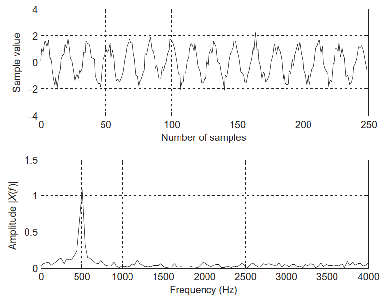
- Top: noisy 500 Hz sine in time domain
- Bottom: magnitude spectrum – clear tone at 500 Hz plus broadband noise up to 4 kHz
Noise Reduction – FIR Design & Result
Using the window method with a Hamming window:
- Cutoff frequency \(f_c=900\) Hz (slightly above 800 Hz passband).
- Filter length \(N=133\) taps (from design tables, e.g., Table 7.7 in text).
Key outcomes:
- Noise strongly reduced in 1000–4000 Hz region.
- Remaining noise within passband (0–800 Hz) cannot be removed by this filter.
- Because \(N=133\), linear‑phase group delay is \[ \text{delay} = \frac{N-1}{2} = 66\text{ samples} \]
- Transient response lasts first \(N-1=132\) samples.
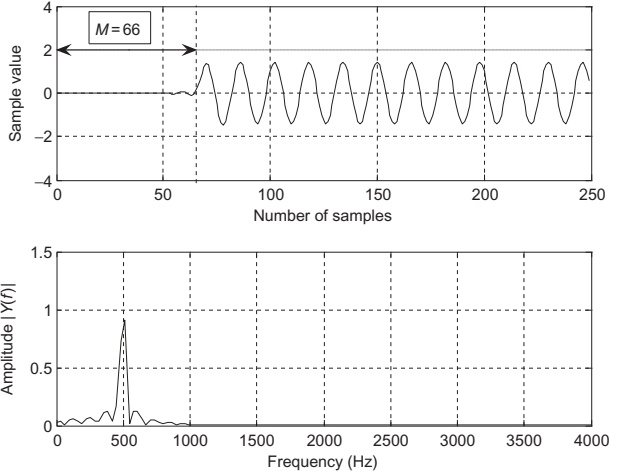
- Time plot: delayed but much cleaner 500 Hz sinusoid.
- Spectrum: near‑zero noise from 1–4 kHz; some “shoulders” 400–700 Hz (in‑band noise that remains).
Tip
Engineering Insight – What Filtering Can & Can’t Do
- A lowpass FIR can remove out‑of‑band noise (e.g., > 1 kHz).
- It cannot remove noise that overlaps the desired signal in frequency (e.g., 400–700 Hz here).
MATLAB Example – Noise Filtering (Program 7.7)
Key steps from Program 7.7:
- Generate noisy signal:
Plot time‑domain x(n) and its (single‑sided) magnitude spectrum via FFT.
Design FIR lowpass using Hamming window:
- Plot y(n) and its spectrum; verify:
- Passband flat near 500 Hz.
- Strong attenuation above 1 kHz.
7.4.2 Speech Noise Reduction
Scenario:
- Speech recorded at \(f_s=8000\) Hz in a noisy environment.
- Typical speech energy is concentrated below ~3–4 kHz.
- Here we assume useful information is within 0–1800 Hz.
FIR lowpass specs:
- Type: lowpass FIR, linear phase
- Passband: 0–1800 Hz, ripple \(< 0.02\) dB
- Stopband: 2000–4000 Hz, attenuation \(\ge 50\) dB
- Design parameters (from tables):
- Window: Hamming
- \(N=133\) taps
- Cutoff \(f_c = 1900\) Hz
Goal: remove high‑frequency broadband noise (e.g., hiss) while keeping consonants and vowel formants mostly intact.
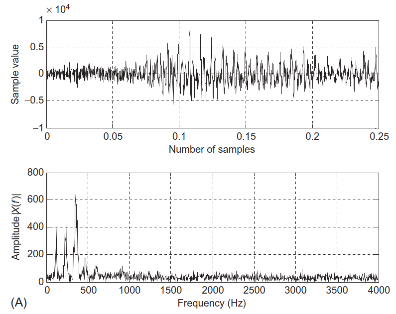
- Time: noisy speech waveform.
- Spectrum: high‑level broadband noise, especially above 2 kHz.
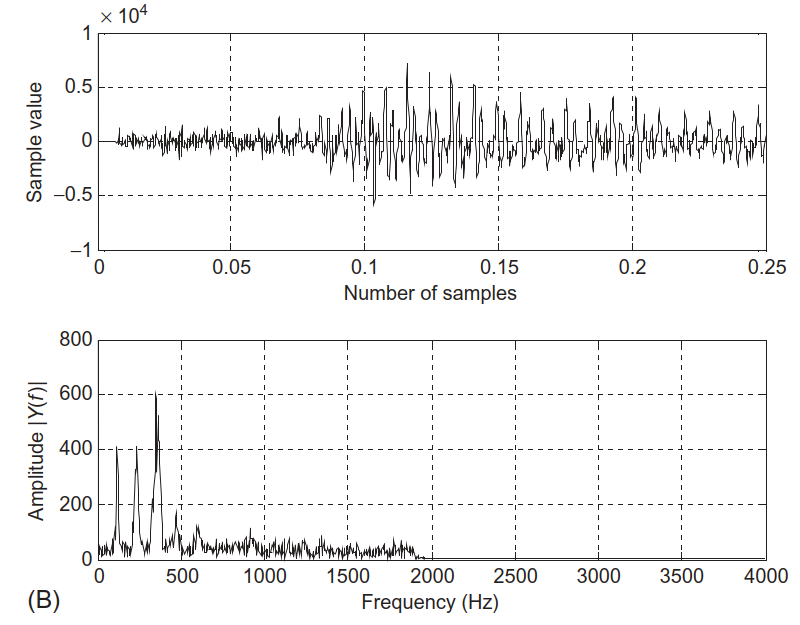
- Time: enhanced (cleaner) speech.
- Spectrum: noise above 2 kHz greatly reduced.
7.4.3 Noise Reduction in Vibration Signals
Vibration analysis setup:
- Accelerometer signal sampled at \(f_s = 1000\) Hz.
- Dominant vibration component expected in 35–50 Hz (e.g., gear mesh, rotor frequency).
- Signal heavily corrupted by broadband noise.
Bandpass FIR specs:
- Passband: 35–50 Hz, ripple \(< 0.02\) dB
- Stopbands: 0–15 Hz and 70–500 Hz, attenuation \(\ge 50\) dB
- Design chosen:
- Window: Hamming
- \(N=167\) taps
- Low cutoff: 25 Hz
- High cutoff: 60 Hz
Goal: isolate the first dominant vibration mode while suppressing low‑frequency drift and high‑frequency noise.
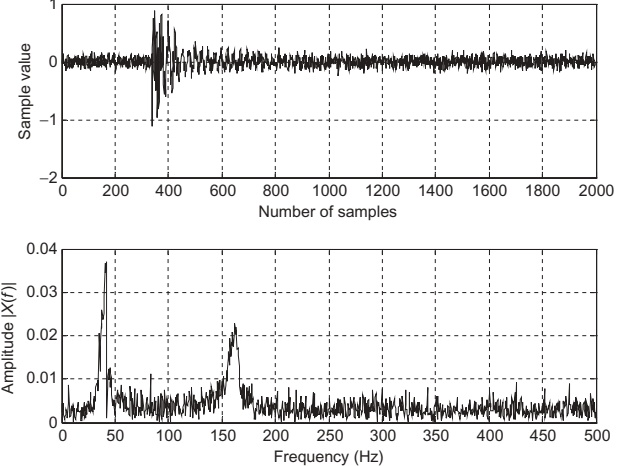
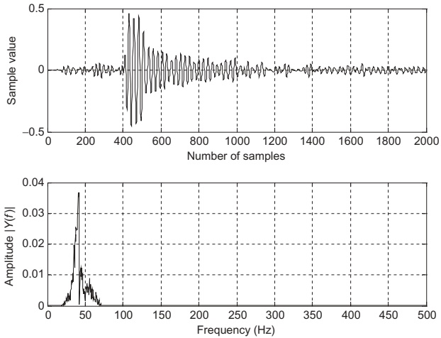
Note
In mechanical / structural health monitoring, clean band‑limited vibration is crucial for:
- Condition‑based maintenance (detect bearing faults).
- Modal analysis (identify resonant frequencies).
- Fault detection in rotating machinery (motors, turbines).
7.4.4 Two‑Band Digital Crossover – Audio Application
In loudspeaker systems:
- No single driver (cone, tweeter) can handle the entire 20 Hz–20 kHz range well.
- Use multiple drivers:
- Woofer – low frequencies
- Tweeter – high frequencies
A two‑band digital crossover splits the input into:
- Low band → amplified → woofer
- High band → amplified → tweeter
Requirements:
- Combined magnitude response must be flat across the audio band.
- Sharp transitions around the crossover frequency to avoid distortion and overlap.
- Prefer linear phase (FIR) for minimal phase distortion in audio.
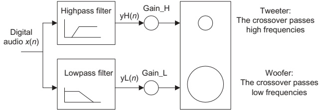
- One digital input.
- Parallel lowpass + highpass FIR filters.
- Separate amplifiers and speaker drivers.
Digital Crossover Specifications
Given:
- Sampling rate: \(f_s = 44100\) Hz (CD audio).
- Crossover (cutoff) frequency: \(f_c = 1000\) Hz.
- Transition band: 600–1400 Hz.
Lowpass FIR:
- Passband: 0–600 Hz, ripple \(< 0.02\) dB
- Stopband edge: 1400 Hz, attenuation \(\ge 50\) dB
Highpass FIR:
- Passband: 1400–22050 Hz (up to Nyquist), ripple \(< 0.02\) dB
- Stopband edge: 600 Hz, attenuation \(\ge 50\) dB
Design decision:
- Use Hamming window FIR for both lowpass and highpass.
- Transition width: \(800\) Hz → from design tables → \(N=183\) taps.
- Both filters share the same cutoff frequency \(f_c = 1000\) Hz, ensuring complementary magnitude responses.
Crossover Frequency Responses
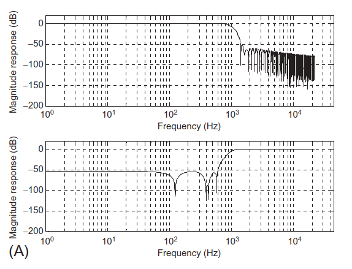
- Magnitude responses of lowpass and highpass filters individually.
- Both cross at 1000 Hz.
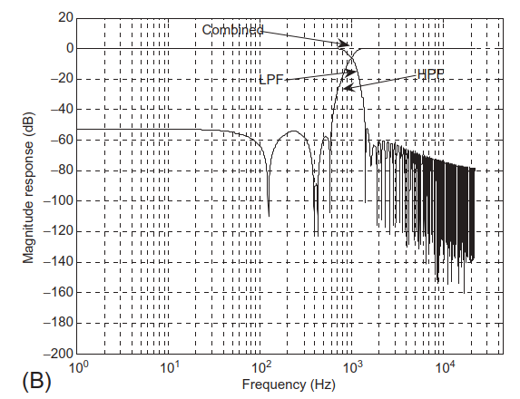
- Lowpass + highpass + combined magnitude response.
- Combined response is essentially flat across all frequencies.
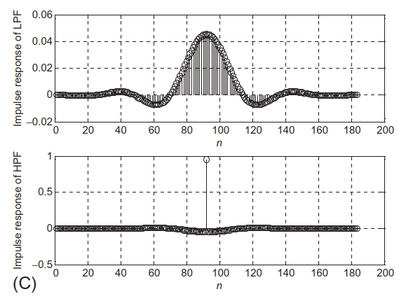
- Impulse responses (FIR coefficients) of both filters.
Important
To get a flat crossover, the lowpass and highpass magnitude responses must be complementary around \(f_c\):
- At each frequency in the transition band, \(|H_\text{LP}(f)|^2 + |H_\text{HP}(f)|^2 \approx 1\) (if normalized).
7.5 Frequency Sampling Design Method – Idea
We now move from window method to frequency sampling.
Key idea:
- Directly specify the desired magnitude response at a set of equally spaced frequencies, then use IDFT to obtain \(h(n)\).
Think of it as:
“Draw the magnitude response you want, sample it at DFT frequencies, then invert the DFT to get the impulse response.”
Let:
- \(h(n)\), \(n=0,\dots,N-1\) = FIR coefficients (causal).
- \(H(k)\), \(k=0,\dots,N-1\) = DFT of \(h(n)\).
Relationship:
\[ H(k) = H\!\left(e^{j\Omega_k}\right), \quad \Omega_k = \frac{2\pi k}{N} \]
We prescribe \(H(k)\) by prescribing \(H(e^{j\Omega_k})\) at these grid points.
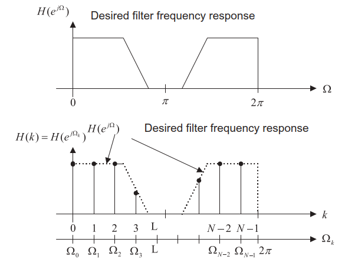
DFT/IDFT Connection
Given FIR transfer function:
\[ H(z)=h(0)+h(1)z^{-1}+\cdots+h(N-1)z^{-(N-1)} \]
Frequency response:
\[ H\!\left(e^{j\Omega}\right)=\sum_{n=0}^{N-1}h(n)e^{-jn\Omega} \]
Sample at \(\Omega_k = 2\pi k/N\):
\[ H\!\left(e^{j\Omega_k}\right) = \sum_{n=0}^{N-1}h(n)e^{-j\frac{2\pi}{N}kn} = \sum_{n=0}^{N-1}h(n)W_N^{nk} = H(k) \]
where \(W_N = e^{-j2\pi/N}\).
So:
- \(H(k)\) is just the DFT of \(h(n)\).
- Therefore \(h(n)\) is the IDFT of \(H(k)\):
\[ h(n) = \frac{1}{N}\sum_{k=0}^{N-1} H(k) W_N^{-kn} \]
Note
Frequency sampling method = Design in frequency domain, compute in time domain via IDFT.
Ensuring Real Coefficients – Symmetry in \(H(k)\)
We want \(h(n)\) real.
For real \(h(n)\), the DFT satisfies conjugate symmetry:
\[ H(N-k)=\overline{H(k)} \]
Using this property, we can write:
\[ h(n) = \frac{1}{N} \left[ H(0) + 2\Re\left\{ \sum_{k=1}^{M} H(k) W_N^{-kn} \right\} \right], \quad N=2M+1 \]
This equation reduces computation and ensures \(h(n)\in\mathbb{R}\).
Adding Linear Phase – Symmetric \(h(n)\)
For Type I linear‑phase FIR (odd length \(N=2M+1\), symmetric \(h(n)\)):
\[ h(n) = h(2M-n),\quad 0\le n\le 2M \]
We can express \(H(e^{j\Omega})\) as:
\[ H\!\left(e^{j\Omega}\right) = e^{-jM\Omega} \left[ h(M) + \sum_{n=1}^{M-1} 2h(n)\cos\big[(M-n)\Omega\big] \right] \]
The bracketed term is real (magnitude), and \(e^{-jM\Omega}\) gives linear phase.
We sample at \(\Omega_k = \frac{2\pi k}{N}\) and specify real magnitudes \(H_k\):
\[ H\!\left(e^{j\Omega_k}\right) = H_k e^{-j\frac{2\pi}{N}kM} = H(k) \]
Substituting into IDFT and simplifying, we get the design formula for \(0\le n\le M\):
\[ h(n) = \frac{1}{N}\left[ H_0 + 2\sum_{k=1}^{M} H_k \cos\left( \frac{2\pi k(n-M)}{2M+1} \right) \right] \]
Then extend using symmetry:
\[ h(n) = h(2M-n),\quad n=M+1,\dots,2M \]
Frequency Sampling Design – Algorithm Summary
Choose odd filter length \(N=2M+1\).
Specify real magnitudes at sampled frequencies:
\[ H_k \text{ at } \Omega_k = \frac{2\pi k}{2M+1},\quad k=0,1,\dots,M \]
Compute first \(M+1\) FIR coefficients using:
\[ b_n = h(n) = \frac{1}{2M+1} \left[ H_0 + 2\sum_{k=1}^{M} H_k \cos\left(\frac{2\pi k(n-M)}{2M+1}\right) \right], \quad n=0,\dots,M \]
Use symmetry for the rest:
\[ h(n) = h(2M-n),\quad n=M+1,\dots,2M \]
Plot frequency response and check specs.
If unsatisfactory, increase \(N\) or adjust sampled magnitudes \(H_k\).
Example 7.12 – 7‑Tap Lowpass via Frequency Sampling
Design:
- \(N=7\Rightarrow 2M+1=7\Rightarrow M=3\).
- Cutoff frequency \(\Omega_c = 0.3\pi\) rad.
Sampled frequencies:
\[ \Omega_k = \frac{2\pi}{7}k,\quad k=0,1,2,3 \]
Specify magnitudes (lowpass‑like):
- \(H_0 = 1\) at \(\Omega_0=0\)
- \(H_1 = 1\) at \(\Omega_1 = \frac{2\pi}{7}\)
- \(H_2 = 0\) at \(\Omega_2 = \frac{4\pi}{7}\)
- \(H_3 = 0\) at \(\Omega_3 = \frac{6\pi}{7}\)
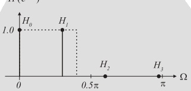
Using design formula:
\[ \begin{aligned} h(n) &= \frac{1}{7}\left[ 1 + 2\sum_{k=1}^{3}H_k\cos\left(\frac{2\pi k(n-3)}{7}\right) \right],\ n=0,1,2,3\\ &= \frac{1}{7}\left[ 1 + 2\cos\left(\frac{2\pi(n-3)}{7}\right) \right] \end{aligned} \]
since \(H_2=H_3=0\).
Computed coefficients:
- \(h(0) = -0.11456\)
- \(h(1) = 0.07928\)
- \(h(2) = 0.32100\)
- \(h(3) = 0.42857\)
By symmetry:
- \(h(4)=h(2)\), \(h(5)=h(1)\), \(h(6)=h(0)\).
Tip
This is a very compact way to generate linear‑phase FIR coefficients from a small vector of frequency samples \(H_k\).
MATLAB Helper – firfs(N,Hk)
The text supplies a MATLAB function:
Usage:
- Provide odd \(N\) and vector \(Hk=[H_0,H_1,\dots,H_M]\).
firfscomputes \(h(n)\) for \(n=0,\dots,N-1\) using the formula we derived.
Example 7.13 – 25‑Tap Lowpass (and Gibbs Effect)
- Design lowpass FIR with:
- \(N=25\Rightarrow M=12\).
- Sampling frequency \(f_s=8000\) Hz.
- Cutoff frequency \(f_c=2000\) Hz → normalized \(\Omega_c = 0.5\pi\).
Choose frequency samples:
\[ H_k = [1\,1\,1\,1\,1\,1\,0\,0\,0\,0\,0\,0] \]
This says:
- First 6 samples (low frequency) magnitude = 1.
- Next 6 samples (higher frequency) magnitude = 0.
MATLAB code (Program 7.8 skeleton):
Magnitude response (dash‑dotted in Fig. 7.31): noticeable oscillations (ripples) in passband & stopband.
Reducing Ripple – Smooth Transition Band
To reduce Gibbs oscillations, modify \(H_k\) to have a smooth transition:
\[ H_k = [1\,1\,1\,1\,1\,1\,0.5\,0\,0\,0\,0\,0] \]
Use firfs again:
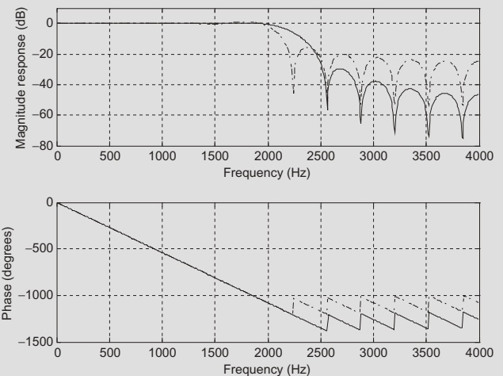
- Dash‑dotted: abrupt transition → strong ripples.
- Solid: smoother transition in \(H_k\) → reduced ripples.
Table 7.12 lists coefficients for both designs.
Note
Trade‑off:
- Sharper transitions in the desired magnitude specification → more ripples (Gibbs).
- Smoother transitions → less ripple but wider actual transition band.
Example 7.14 – 25‑Tap Bandpass with Frequency Sampling
- Bandpass specs:
- Sampling: \(f_s=8000\) Hz.
- Lower cutoff \(f_L=1000\) Hz → \(\Omega_L = 0.25\pi\).
- Upper cutoff \(f_H=3000\) Hz → \(\Omega_H = 0.75\pi\).
Initial bandpass \(H_k\) (no smoothing):
\[ H_k = [0\,0\,0\,0\,1\,1\,1\,1\,1\,0\,0\,0] \]
(Conceptually – the text compressed this notation.)
Smoothed \(H_k\) with gentle transitions:
\[ H_k = [0\,0\,0\,0.5\,1\,1\,1\,1\,0.5\,0\,0\,0] \]
MATLAB design (Program 7.9 skeleton):
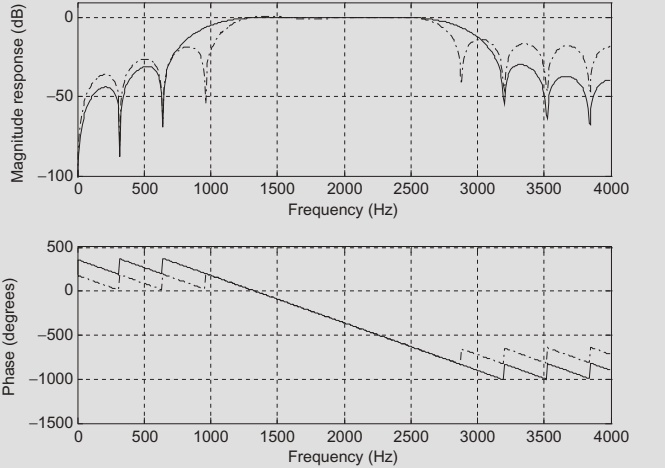
Again:
- Dash‑dotted: abrupt transitions → stronger ripple.
- Solid: smoothed transitions → reduced ripple.
Coefficients are in Table 7.13.
Observations – Frequency Sampling Method
From Examples 7.13 and 7.14:
- Gibbs behavior:
- Abrupt jumps in the sampled magnitude \(H_k\) cause oscillations in the passband/stopband.
- Ripple vs main lobe width:
- Smoothing the desired \(H_k\) reduces ripples but widens the transition region.
- Flexibility:
- \(H_k\) can be chosen quite arbitrarily (subject to symmetry for real \(h(n)\)).
- Enables designing non‑standard magnitude shapes.
7.6 Optimal Design: Parks–McClellan Algorithm
We now consider a more advanced, widely used method:
- Goal: Minimize the maximum error between desired and actual magnitude response → minimax (Chebyshev) optimization.
- Result: Equiripple FIR filters – ripples are equal in magnitude across the passband and stopband.
Let:
- \(H_d(e^{j\omega T})\): ideal desired magnitude response.
- \(H(e^{j\omega T})\): actual FIR response.
- \(W(\omega)\): weighting function to emphasize/de‑emphasize certain bands.
Error function:
\[ E(\omega) = W(\omega)\left[ H(e^{j\omega T}) - H_d(e^{j\omega T}) \right] \]
We seek to minimize:
\[ \min \left( \max_\omega |E(\omega)| \right) \]
The algorithm uses Remez exchange and Chebyshev polynomials internally (details beyond this course).
Equiripple & Weighting
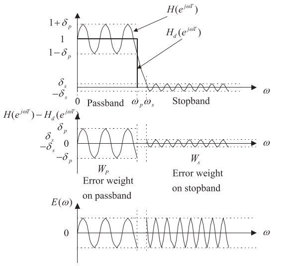
Top:
- Ideal lowpass vs practical equiripple FIR (Parks–McClellan).
- Passband ripple \(\delta_p\), stopband ripple \(\delta_s\).
Middle:
- Error (unweighted) in passband and stopband.
- If one band has much larger error, optimization is unbalanced.
Bottom:
- Weighted error with \(W_p\) (passband) and \(W_s\) (stopband).
- We choose \(W_p\) and \(W_s\) so that weighted errors are about equal across bands.
Conversions from dB specs:
\[ \delta_p = 10^{\frac{\delta_p\text{(dB)}}{20}} - 1 \]
\[ \delta_s = 10^{\frac{\delta_s\text{(dB)}}{20}} \]
Then:
\[ \frac{\delta_p}{\delta_s} = \frac{W_s}{W_p} = \frac{\text{numerator}}{\text{denominator}} \]
So:
- Choose integer ratio \(\approx \delta_p/\delta_s\), set \(W_s = \text{numerator}\), \(W_p = \text{denominator}\).
Parks–McClellan Design Procedure
Spec band edges and performance:
- Passband frequencies, stopband frequencies, passband ripple (dB), stopband attenuation (dB), filter order, sampling rate.
Normalize frequencies to Nyquist \(f_s/2\) and define ideal magnitudes in each band.
Convert dB ripple/attenuation to linear:
\[ \delta_p = 10^{\frac{\delta_p\text{(dB)}}{20}} - 1,\quad \delta_s = 10^{\frac{\delta_s\text{(dB)}}{20}} \]
Then:
\[ \frac{\delta_p}{\delta_s} \approx \frac{W_s}{W_p} \]
Choose integer \(W_s\) and \(W_p\).
Run Remez /
firpmalgorithm to compute coefficients.Check response (freqz). If not satisfactory, increase filter order and repeat.
Example 7.15 – Lowpass via Parks–McClellan
Specs:
- \(f_s = 8000\) Hz.
- Passband: 0–800 Hz, ripple \(\le 1\) dB.
- Stopband: 1000–4000 Hz, attenuation \(\ge 40\) dB.
- Filter order: 53 (→ 54 taps).
Normalize by \(f_s/2=4000\) Hz:
- 0 Hz → 0, magnitude 1
- 800 Hz → \(0.2\), magnitude 1
- 1000 Hz → \(0.25\), magnitude 0
- 4000 Hz → 1, magnitude 0
Weights:
\[ \delta_p = 10^{\frac{1}{20}} - 1 \approx 0.1220 \]
\[ \delta_s = 10^{\frac{-40}{20}} = 0.01 \]
Ratio:
\[ \frac{\delta_p}{\delta_s} \approx 12.2 \approx \frac{12}{1} = \frac{W_s}{W_p} \]
So \(W_s = 12\), \(W_p = 1\).
MATLAB (Program 7.10):
Results:
- Stopband attenuation meets 40 dB requirement.
- Zoomed‑in passband (Fig. 7.35) shows ripples between −1 dB and +1 dB → meets spec.
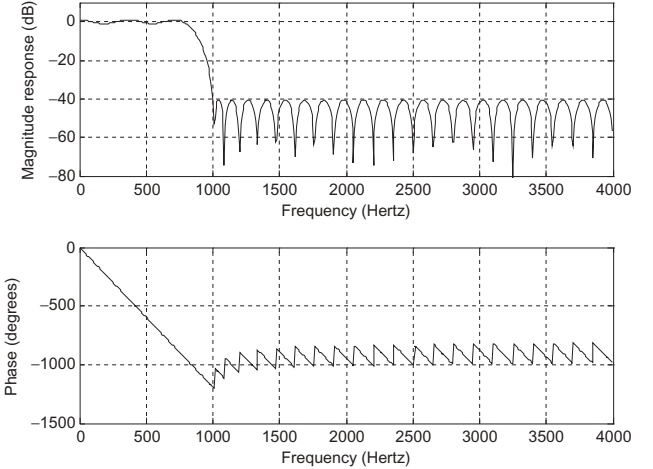
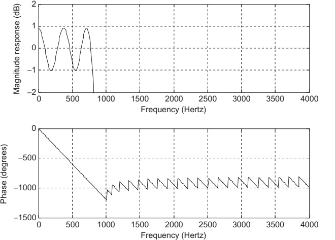
Coefficients are symmetric (Table 7.14).
Example 7.16 – Bandpass via Parks–McClellan
Specs:
- \(f_s=8000\) Hz.
- Passband: 1000–1600 Hz (1 dB ripple).
- Stopbands: 0–600 Hz and 2000–4000 Hz (30 dB attenuation).
- Filter order: 25 (26 taps).
Normalize by 4000 Hz:
- 0 Hz → 0, magnitude 0
- 600 Hz → 0.15, magnitude 0
- 1000 Hz → 0.25, magnitude 1
- 1600 Hz → 0.4, magnitude 1
- 2000 Hz → 0.5, magnitude 0
- 4000 Hz → 1, magnitude 0
Weights:
\[ \delta_p = 10^{\frac{1}{20}} - 1 \approx 0.1220,\quad \delta_s = 10^{\frac{-30}{20}} \approx 0.0316 \]
Ratio:
\[ \frac{\delta_p}{\delta_s} \approx 3.86 \approx \frac{39}{10} = \frac{W_s}{W_p} \]
So \(W_s=39\), \(W_p=10\).
MATLAB (Program 7.11):
Results:
- Stopband attenuation meets ≥30 dB.
- Passband ripple between −1 dB and +1 dB (Fig. 7.37).
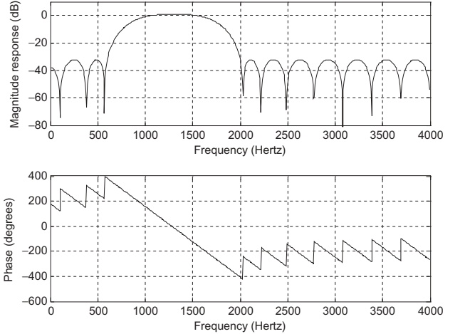
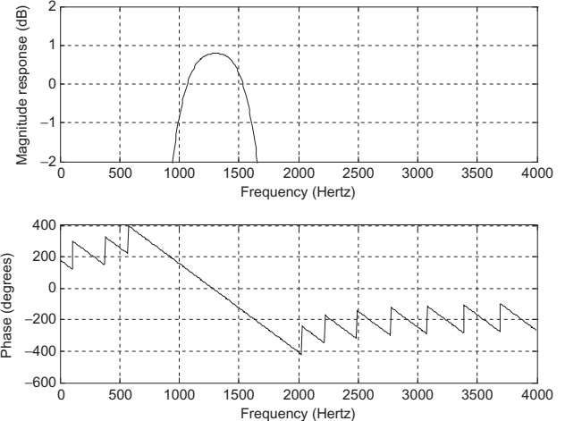
Example 7.17 – Remez Exchange on a 3‑Tap Filter
This example shows how the Remez algorithm iteratively adjusts coefficients to achieve equiripple error.
Filter structure (Type I linear phase):
\[ H(z) = b_0 + b_1 z^{-1} + b_0 z^{-2} \]
Frequency response magnitude (ignoring linear phase):
\[ H(e^{j\Omega}) = b_1 + 2b_0\cos\Omega \]
Desired magnitude \(H_d(e^{j\Omega})\):
- Increases linearly from 0.5 at \(\Omega=0\) to 1 at \(\Omega=\pi/4\).
- Transition band from \(\pi/4\) to \(\pi/2\).
- Decreases linearly from 0.75 at \(\Omega=\pi/2\) to 0 at \(\Omega=\pi\).
Set weight \(W(\Omega)=1\).
Error:
\[ E(\Omega) = H(e^{j\Omega}) - H_d(e^{j\Omega}) \]
Remez alternation theorem:
- There must be at least \(M+2\) extremal frequencies for an \(M\)‑th degree Chebyshev approximation.
- Here degree is 1 in \(\cos\Omega\) → need 3 extremal frequencies.
- At extremal frequencies \(\Omega_k\), error alternates sign and has equal magnitude \(E_{\max}\).
Algorithm:
Choose initial extremal frequencies (e.g., uniformly): \(\Omega_0=0\), \(\Omega_1=\pi/2\), \(\Omega_2=\pi\).
Solve linear system for \(b_0,b_1,E\) to satisfy:
\[ -(-1)^kE = H_d(e^{j\Omega_k}) - H(e^{j\Omega_k}) \]
Compute error across band, find new extremal points where \(|E(\Omega)|\) is large; update \(\Omega_k\).
Repeat until extremal set stabilizes.
After two iterations, they obtain:
\[ H(z) = 0.125 + 0.537 z^{-1} + 0.125 z^{-2} \]
with equiripple error amplitude ≈ 0.287.
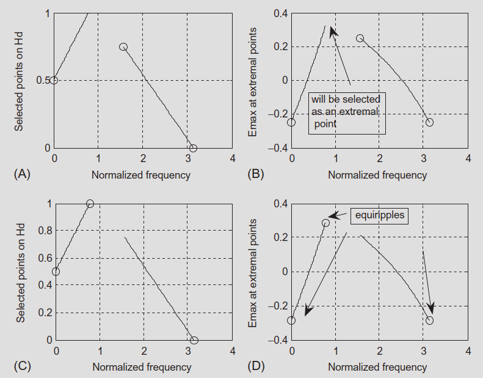
Summary: Comparing FIR Design Methods
From Section 7.10 and Table 7.19:
| Method | Typical Filter Types | Linear Phase? | Control of Ripple/Atten | Complexity | Tool Needed |
|---|---|---|---|---|---|
| Window (Fourier + window) | LP, HP, BP, BS (standard shapes) | Yes | Used to choose order; must check | Moderate (closed‑form + window) | Calculator or simple code |
| Frequency Sampling | Any magnitude shape | Yes (if symmetric) or no (if not) | Specs checked a posteriori | Simple (single formula) | Calculator or MATLAB |
| Optimal (Parks–McClellan) | Any type | Yes | Ripple & attenuation explicitly in cost | High (iterative Remez) | Software (firpm, remez) |
Design flow in practice:
- Standard lowpass / highpass / bandpass / bandstop, moderate specs, no special shaping → Window method is usually enough.
- Arbitrary magnitude shape (e.g., equalizer curve), Remez not available → Frequency sampling.
- Tight, optimal control over ripple and attenuation + software available → Parks–McClellan.
Example 7.20 – Choosing a Design Method
Two‑band digital crossover system (as earlier):
- Lowpass + highpass with standard specs.
- No Remez implementation available.
→ Use window method (Hamming) with table‑based order selection. → Alternate: Parks–McClellan (if Remez is available) but more complex; also must ensure combined unity gain at crossover.
Speech equalizer with non‑standard magnitude shape (Fig. 7.45):
- Arbitrary shape (not simple LP/HP/BP/BS).
- No Remez algorithm available.
→ Use frequency sampling method:
- Sample the desired magnitude at DFT grid points.
- Use
firfsor the design formula to compute \(h(n)\).
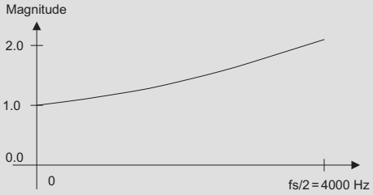
Key Takeaways (Conceptual)
- Applications: FIR filters are central to noise reduction in measurement, speech, and vibration, and for shaping audio (crossovers, equalizers).
- Window method:
- Simple, good for standard lowpass/highpass/bandpass/bandstop.
- Uses approximate order formulas + windows (Hamming, etc.).
- Frequency sampling:
- Directly specify desired magnitudes \(H_k\) at frequency samples.
- Compute \(h(n)\) by IDFT‑based formula.
- Very flexible for arbitrary shapes, but requires experimentation with \(H_k\) and \(N\) to meet specs.
- Optimal / Parks–McClellan:
- Designs equiripple filters minimizing maximum weighted error.
- Uses weights derived from passband/stopband ripple specs.
- Implemented via Remez exchange in tools like MATLAB’s
firpm.
- Design choice: Depends on:
- Shape complexity (standard vs arbitrary).
- Required control over ripple/attenuation.
- Availability of software tools.
Formula Summary
Signal + noise example:
Noisy 500 Hz sine at \(f_s = 8000\) Hz:
\[ x(n)=1.4141\sin\left(\frac{2\pi\cdot500n}{8000}\right)+\nu(n) \]
Frequency sampling method:
DFT relationship:
\[ H(k) = \sum_{n=0}^{N-1} h(n) W_N^{nk},\quad W_N=e^{-j2\pi/N} \]
IDFT for \(h(n)\):
\[ h(n) = \frac{1}{N}\sum_{k=0}^{N-1} H(k) W_N^{-kn} \]
Using conjugate symmetry for real \(h(n)\), \(N=2M+1\):
\[ h(n) = \frac{1}{N}\left[ H(0) + 2\Re\left\{ \sum_{k=1}^{M}H(k)W_N^{-kn} \right\} \right] \]
Linear‑phase design formula (for \(0\le n\le M\)):
\[ h(n) = \frac{1}{N}\left[ H_0 + 2\sum_{k=1}^{M} H_k\cos\left(\frac{2\pi k(n-M)}{2M+1}\right) \right] \]
Symmetry:
\[ h(n)=h(2M-n),\quad n=M+1,\dots,2M \]
Parks–McClellan method:
Error function:
\[ E(\omega) = W(\omega)\left[ H(e^{j\omega T}) - H_d(e^{j\omega T}) \right] \]
Minimax objective:
\[ \min \left( \max_\omega |E(\omega)| \right) \]
Converting specs from dB:
\[ \delta_p = 10^{\frac{\delta_p\text{(dB)}}{20}} - 1,\quad \delta_s = 10^{\frac{\delta_s\text{(dB)}}{20}} \]
Weight ratio:
\[ \frac{\delta_p}{\delta_s} = \frac{W_s}{W_p} \]
Use integer approximation for \(W_p\), \(W_s\) in practice.
FIR Filter Design – Interactive Deck
How to Use This Interactive Deck
- All code runs in the browser using Pyodide (Python via WebAssembly).
- You can:
- Edit and run Python code examples (tagged
{pyodide}). - Use sliders and controls (OJS) to drive reactive plots in Python and Plotly.
- Edit and run Python code examples (tagged
- Goal: help you build intuition about FIR filters, frequency responses, and design methods by experimenting.
Tip
Tip: After changing code, press the Run button (or the ▶ icon) on that block to see updated outputs and plots.
1. FIR Filtering of a Noisy Sine – Try It
We start with the 500 Hz sine + noise example (Section 7.4.1).
Use this sandbox to:
- Change the sine frequency
- Change noise level
- See how the time signal and its spectrum look
2. Noisy Sine – Explore the Spectrum
Now let’s compute and visualize the single‑sided amplitude spectrum.
Try changing f0 or noise_std again and see how the peak and noise floor move.
3. Interactive FIR Lowpass for Noise Reduction
We now filter the noisy sine using a simple FIR lowpass. Here we use a rectangular‑window sinc lowpass to keep the code short and transparent.
You can:
- Adjust cutoff frequency
fc - Adjust filter length
Nf - See how this affects time‑domain output and spectrum
Tip
Try:
fc = 800vsfc = 2000Nf = 31,51,201
Observe:
- Larger
Nf→ sharper transition, but more delay and more start‑up transient. - Smaller
fc→ more aggressive low‑frequency focus (but may attenuate the 500 Hz tone).
4. Noisy Sine – Filtered Spectrum
Let’s look at before/after spectra to see how the FIR lowpass affects noise.
5. Reactive Cutoff Slider – FIR Frequency Response (Plotly)
Now we make it fully interactive: choose the normalized cutoff and see the FIR lowpass magnitude response change in real time.
6. Reactive SNR Experiment – Filtering Noisy Sine
Let’s connect filter design to SNR improvement.
Use sliders to:
- Set
noise_std(noise strength). - Adjust
norm_fc(lowpass cutoff). - See the SNR before and after filtering, and view the filtered waveform.
Note
Questions to explore:
- For a fixed
noise_std2, how does changingnorm_fc2affect SNR improvement? - What happens if cutoff is too low (you start to cut your 500 Hz signal)?
7. Frequency Sampling Method – Direct Experiment
Now we build a tiny frequency sampling designer for a low‑order FIR.
You specify magnitudes \(H_k\) at discrete frequencies, and we compute \(h(n)\) and its frequency response.
Define Sampled Magnitudes
We’ll design a 7‑tap (\(N=7\)) linear‑phase FIR (as in Example 7.12) using:
- \(H_0 = \text{H0}\)
- \(H_1 = \text{H1}\)
- \(H_2 = \text{H2}\)
- \(H_3 = \text{H3}\)
Tip
Set \((H_0,H_1,H_2,H_3)=(1,1,0,0)\) to recover Example 7.12. Then, try gradual transitions like \((1,0.7,0.3,0)\) to see how the response changes.
8. Gibbs vs Smooth Transition – Frequency Sampling
We now create a tiny comparison like Example 7.13/7.14:
- Abrupt spec → strong ripple
- Smooth spec → reduced ripple
Try H_mid = 0 (abrupt) vs H_mid = 0.5 for smoother transition.
9. Parks–McClellan Intuition – Weighting Trade‑Off
We can’t implement full Remez here easily, but we can experiment with weights in a very simple polynomial approximation problem as an analogy.
We approximate a piecewise constant function \(d(\omega)\) with a degree‑1 polynomial \(p(\omega)=a\omega + b\), using different weights in two regions.
Note
This is an analogy: in full Parks–McClellan, \(W_p\) and \(W_s\) control relative error in passband vs stopband. Increasing \(W_s\) forces the algorithm to “work harder” in the stopband and accept more passband ripple, and vice versa.
10. Reflection – What Did You Learn Interactively?
Use this slide to check your understanding.
Try answering in your own words (mentally or in your notes) before the instructor discussion.